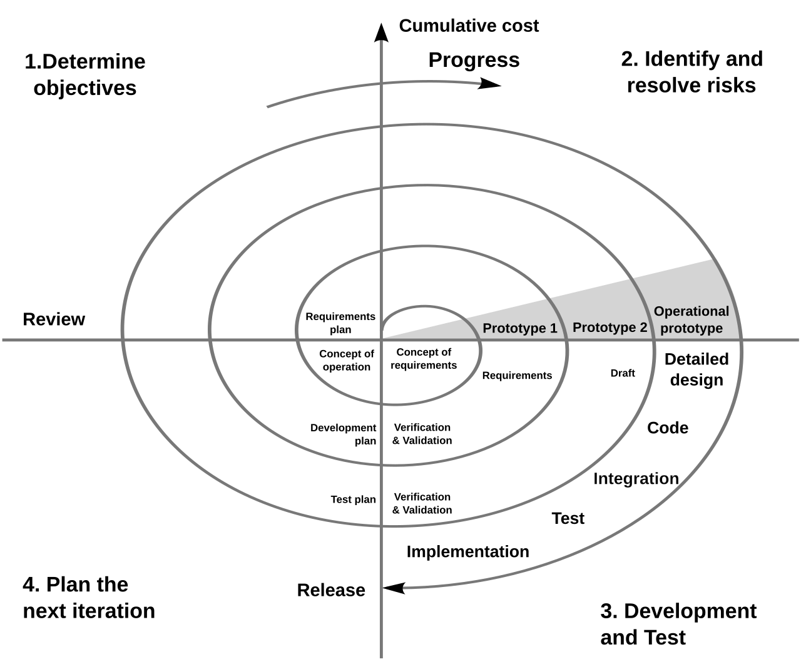

Spiraalmudeli kõige olulisem põhimõte on riskidega arvestamine igas iteratsioonis.
Iga kordus algab riskide hindamisega ehk vaadatakse, mis võib projekti käigus valesti minna
ning kuidas neid riske vähendada või vältida.
Etappide kirjeldus
Boehmi järgi koosneb üks spiraali ring neljast etapist:
Need neli etapid korduvad seni, kuni projekt on lõpetanud.
Arendusmudeli joonis:

Head ja halvad küljed:
Head küljed:
Halvad küljed:
Riskide varajane tuvastamine ja vähendamine.
On kulukas, nõuab pidevat planeerimist, riskianalüüsi ja hindamist.
Sobib keerukate ja ebamääraste nõuetega projektidele.
Aeganõudev, sobib pigem suuremahulistele, keerukatele ja kalli riskiga projektidele.
Võimaldab arendust kohandada vastavalt olukorrale.
Keeruline määrata tsüklite arvu ja nende kestust ette.